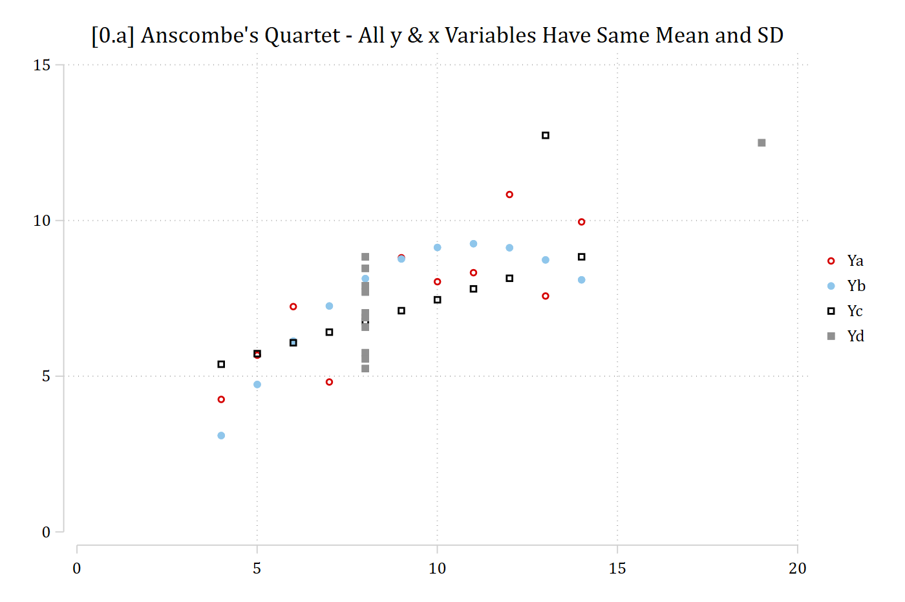
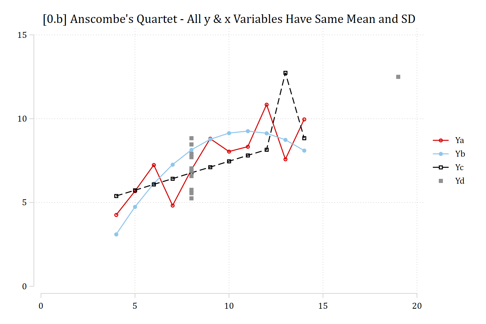

Is coding correct? Is distribution skewed? Are there clear relationships between variables? Etc.
These types of questions are easy to answer/process visually
The human brain can much more quickly understand visual information than numerical or textual information (Medina 2008)
“The graphical method has considerable superiority for the exposition of statistical facts over the tabular. A heavy bank of figures is grievously wearisome to the eye, and the popular mind is as incapable of drawing any useful lessons from it as of extracting sunbeams from cucumbers.” (Farquhar and Farquhar 1891)
Linear Regression Estimates
----------------------------------------------------------------------------
(1) (2) (3) (4)
Ya Yb Yc Yd
----------------------------------------------------------------------------
Xabc 0.50** 0.50** 0.50**
(0.12) (0.12) (0.12)
Xd 0.50**
(0.12)
_cons 3.00* 3.00* 3.00* 3.00*
(1.12) (1.13) (1.12) (1.12)
----------------------------------------------------------------------------
N 11 11 11 11
----------------------------------------------------------------------------
Standard errors in parentheses
* p<0.05, ** p<0.01, *** p<0.001
library(foreign) # load Stata datasetslibrary(ggplot2) # main graphics packagelibrary(modelsummary) # coefficient plots & nice tableslibrary(cleanplots) # Mize's graphics scheme## Use cleanplots colors, markers, lines, and theme for all graphs ##cleanplots_defaults()theme_update(plot.title.position ="plot") # titles start at left edge of graph# Anscombe's quartetanscombe <-read.dta("https://tdmize.github.io/data/data/anscombe.dta")summary(anscombe[c("Ya", "Yb", "Yc", "Yd")])
Ya Yb Yc Yd
Min. : 4.260 Min. :3.100 Min. : 5.39 Min. : 5.250
1st Qu.: 6.315 1st Qu.:6.695 1st Qu.: 6.25 1st Qu.: 6.170
Median : 7.580 Median :8.140 Median : 7.11 Median : 7.040
Mean : 7.501 Mean :7.501 Mean : 7.50 Mean : 7.501
3rd Qu.: 8.570 3rd Qu.:8.950 3rd Qu.: 7.98 3rd Qu.: 8.190
Max. :10.840 Max. :9.260 Max. :12.74 Max. :12.500
amod1 <-lm(Ya ~ Xabc, data = anscombe)amod2 <-lm(Yb ~ Xabc, data = anscombe)amod3 <-lm(Yc ~ Xabc, data = anscombe)amod4 <-lm(Yd ~ Xd, data = anscombe)modelsummary(list(amod1, amod2, amod3, amod4), stars =TRUE)
sort Xabc // this forces lines to connect from left to right// 0.a - Scatterplot of the datatwoway/// (scatter Ya Xabc) /// (scatter Yb Xabc) /// (scatter Yc Xabc) /// (scatter Yd Xd), /// ylab(0(5)15) xlab(0(5)20) ///title("[0.a] Anscombe's Quartet - All y & x Variables Have Same Mean and SD")

# 0.a - Scatterplot of the dataggplot(anscombe) +geom_point(aes(x = Xabc, y = Ya), color =cleanplots_colors("red"), size =3) +geom_point(aes(x = Xabc, y = Yb), color =cleanplots_colors("ltblue"), size =3) +geom_point(aes(x = Xabc, y = Yc), color =cleanplots_colors("gray"), size =3) +geom_point(aes(x = Xd, y = Yd), color =cleanplots_colors("black"), size =3) +labs(x ="X", y ="Y",title ="[0.a] Anscombe's quartet - All y & x variables have same mean and SD")
// 0.b - Add connected linestwoway/// (connected Ya Xabc) /// (connected Yb Xabc) /// (connected Yc Xabc) /// (scatter Yd Xd), /// ylab(0(5)15) xlab(0(5)20) ///title("[0.b] Anscombe's Quartet - All y & x Variables Have Same Mean and SD")

# 0.b - Add connected linesggplot(anscombe) +geom_point(aes(x = Xabc, y = Ya), color =cleanplots_colors("red"), size =3) +geom_line( aes(x = Xabc, y = Ya), color =cleanplots_colors("red")) +geom_point(aes(x = Xabc, y = Yb), color =cleanplots_colors("ltblue"), size =3) +geom_line( aes(x = Xabc, y = Yb), color =cleanplots_colors("ltblue")) +geom_point(aes(x = Xabc, y = Yc), color =cleanplots_colors("gray"), size =3) +geom_line( aes(x = Xabc, y = Yc), color =cleanplots_colors("gray")) +geom_point(aes(x = Xd, y = Yd), color =cleanplots_colors("black"), size =3) +labs(x ="X", y ="Y",title ="[0.b] Anscombe's quartet - All y & x variables have same mean and SD")
“Data visualization is part art and part science. The challenge is to get the art right without getting the science wrong, and vice versa.” (Wilke 2019 p.1)
Too many data visualization guides lean on aesthetic opinions only
Aesthetics are important…
But there is a large scientific literature on what makes an effective data visualization
Goal is to learn general principles to guide any data or model visualization
To make visualizations that are both effective and beautiful
Along the way, add to your toolbox of visualization strategies
Learn what tools are effective for what types of data and situations